美浜アメリカンビレッジ
到着後のウォーミングアップに。ショップとライト、海辺の風をひと通り味わう夜です。旧観覧車跡地はホテルになっているので、目印は「桑江交差点」やデポアイランドで十分です。
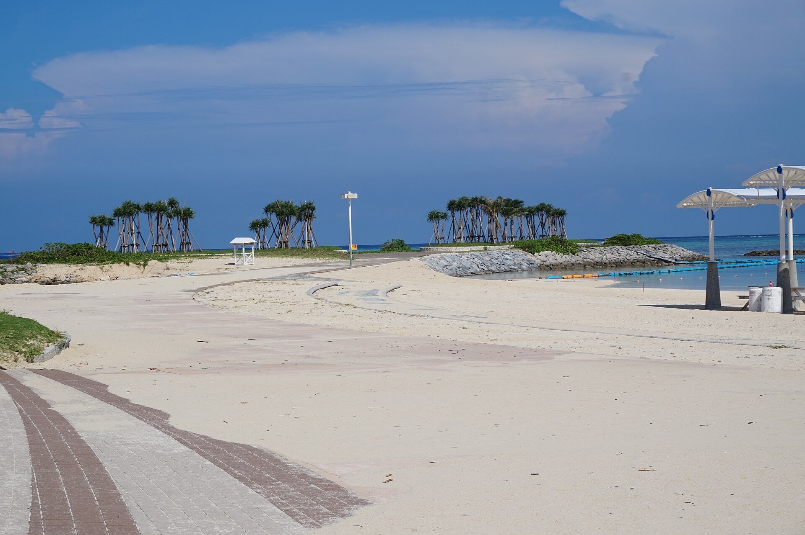
海も、洞窟も、ネオンの夜も。
姉妹ふたりと見つける、4つの「はじめて」。
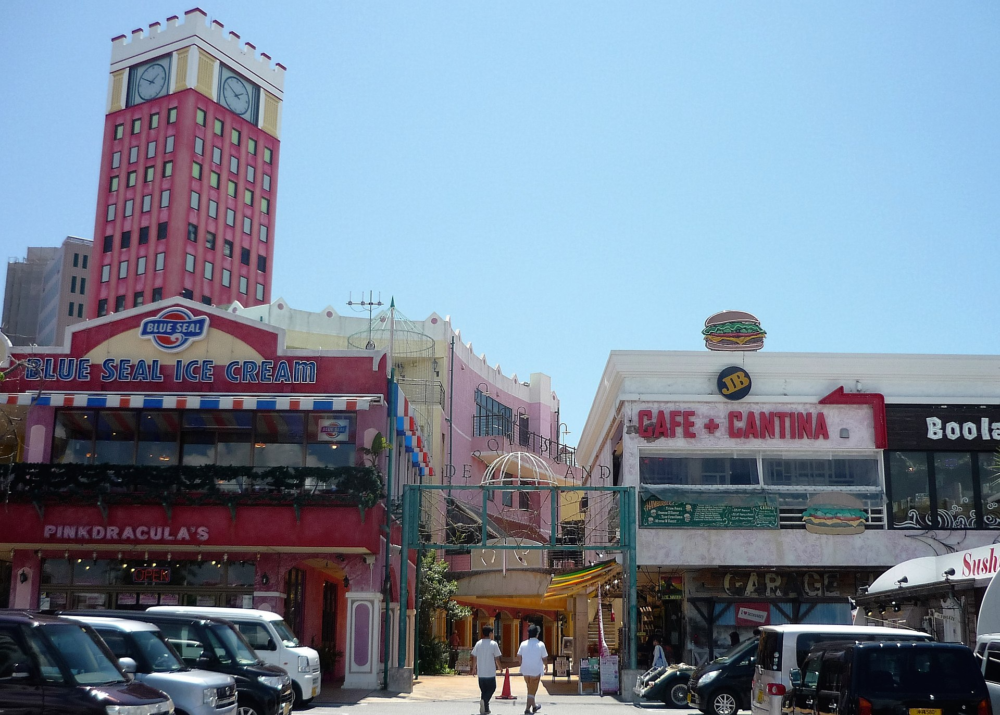


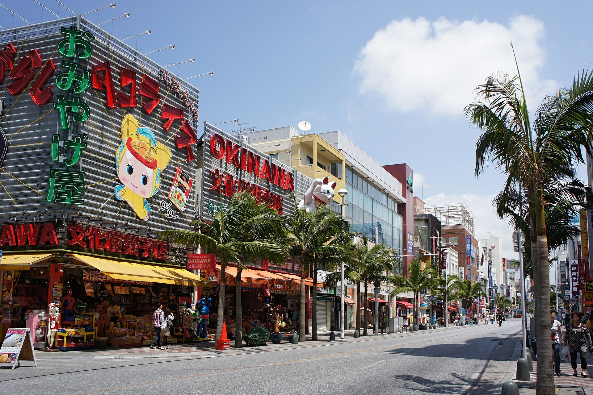
2026年のカレンダーでは、12日は土曜日、15日は火曜日です。2日目と3日目は天気で入れ替えできます。パイナップルパークは残しつつ、同ルートで映える琉球村と万座毛も午後の候補に入れました。
到着夜は、歩いて楽しい北谷・美浜へ。観覧車は2022年になくなっていますが、デポアイランドの街並みと隣のサンセットビーチは健在です。
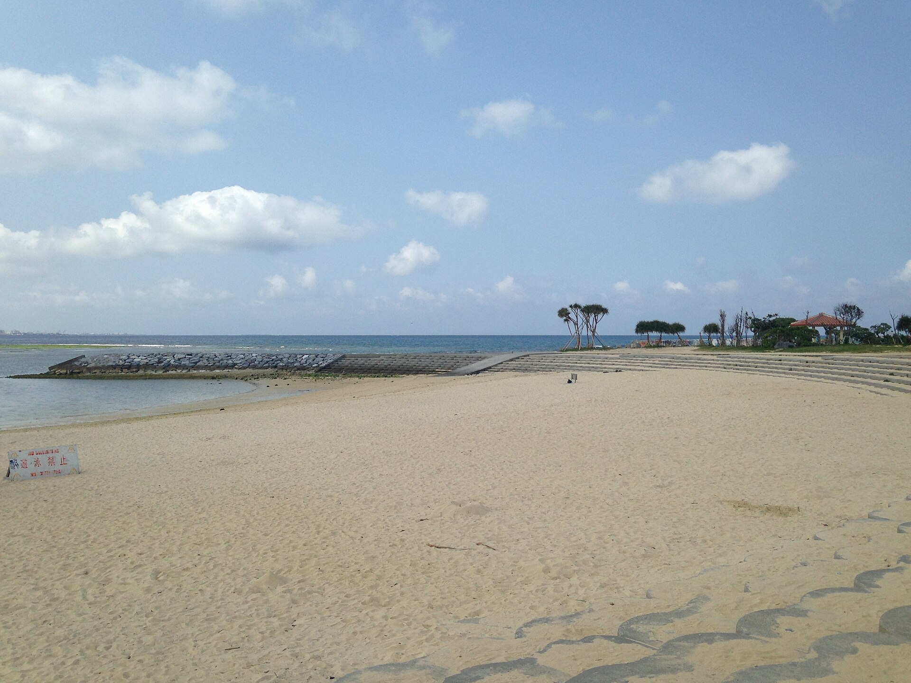
到着後のウォーミングアップに。ショップとライト、海辺の風をひと通り味わう夜です。旧観覧車跡地はホテルになっているので、目印は「桑江交差点」やデポアイランドで十分です。

at's chatan 2F。がっつり肉で初日の乾杯。子どもメニューあり。

沖縄に残るA&W。バーガーとルートビアフロートが名物。
海のアクティビティは晴れた日に。洞窟は雨でも快適（洞内は約21℃）なので、天気予報を見て朝に入れ替えてください。
午前は名護・済井出の潜水スクーター。古宇利の手前の、透明度の高い穏やかな海です。
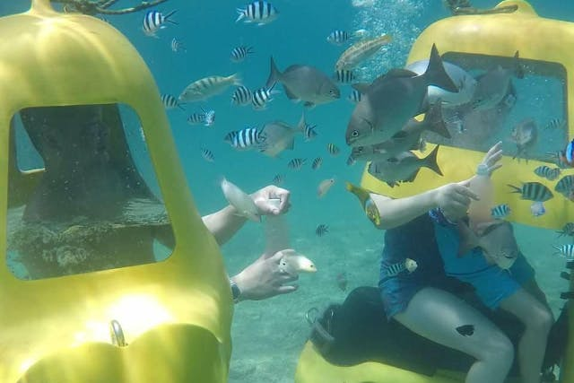
集合は思い出販売所 美ら海。ヘルメット型なので顔が濡れず、泳げなくてもOK。魚の餌付けつき。出航から帰港まで約1時間。
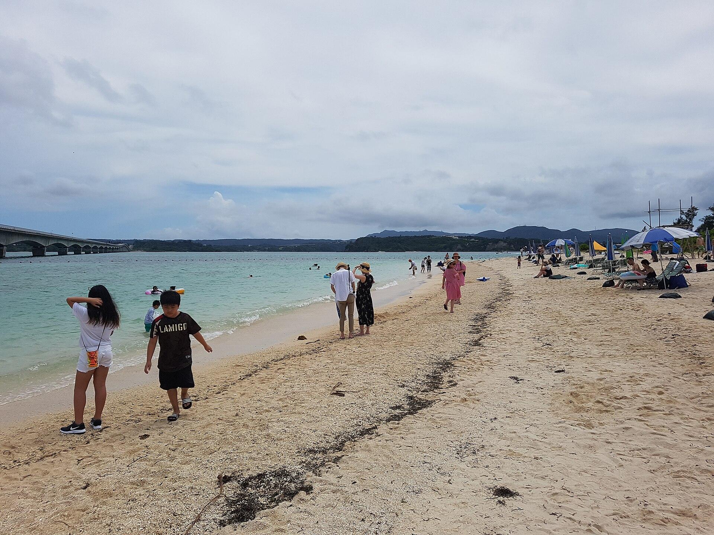
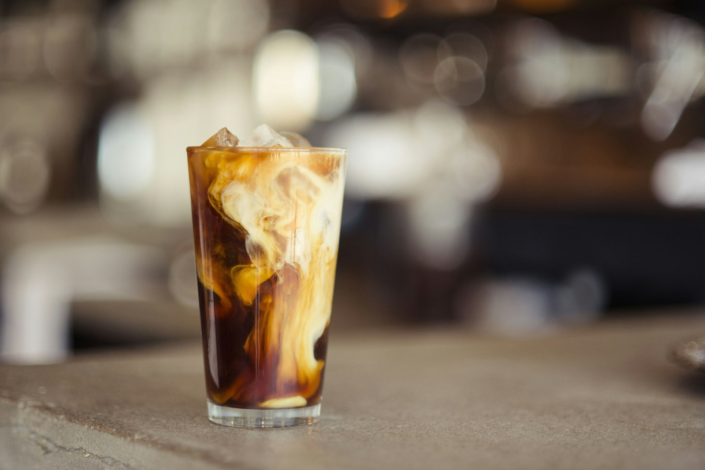
済井出からすぐ。目の前で黒糖を削る生黒糖ラテが看板。テイクアウト中心。公式：thesinmay.com
R 650円 / L 800円。削りたての黒糖が雪のように乗る一杯。

ココア R 400円。軽食もあり。子どもと並んでも負担が少ない。

済井出から美ら海へ向かう途中。明治創業の沖縄そば。水曜定休。

午後に琉球村・万座毛へ南下する日だけ。済井出からは少し戻る。
午前が済井出なので、午後も北部に残すと楽。パイナップルパークは名護で寄りやすい。琉球村・万座毛は南へ戻る分、ドライブが増えます。
世界最大級の水槽「黒潮の海」。ジンベエザメとマンタが頭上を横切る瞬間が、この日のクライマックスです。
古宇利大橋は済井出からすぐ先。同日に島まで足を伸ばすと帰りが夜になります。
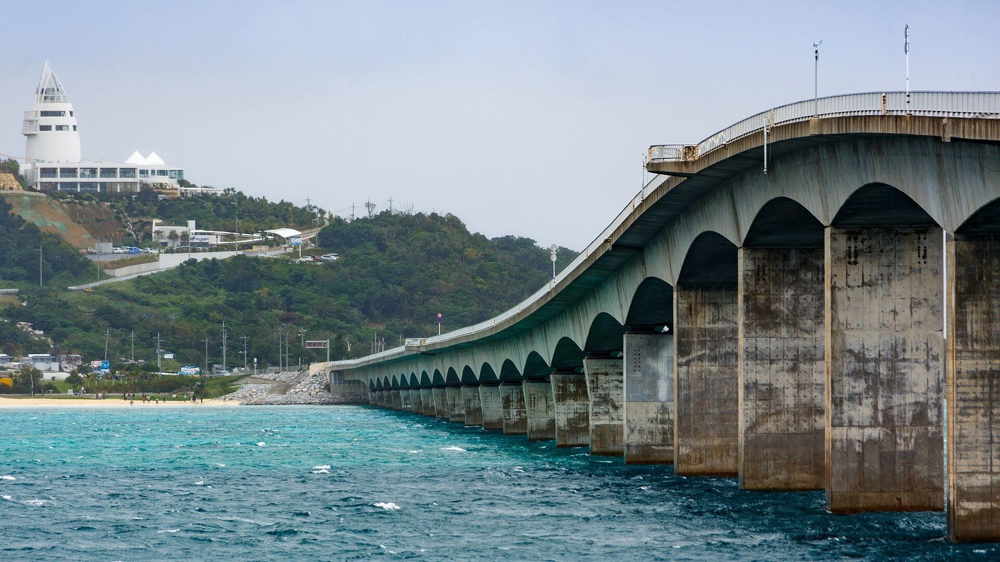
雨でも成立する南の日。洞窟のあと、空港近くの瀬長島で夕景。
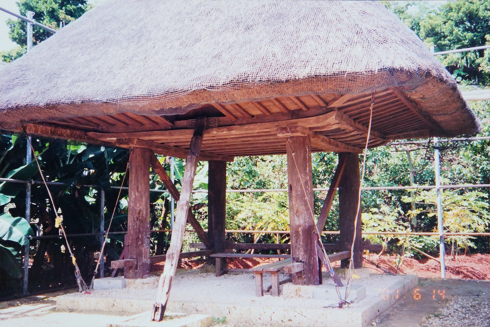

日本有数の鍾乳洞を歩いて探検。洞内は一年中ひんやり。シーサー絵付けや王国村と組み合わせると、午後までもたせすぎずに充実します。

白い段々の街並みが「日本のアマルフィ」と呼ばれるフォトスポット。夕陽と飛行機雲を見ながら、ソフトや買い物で余韻を。

帰りの前に、国際通りと牧志公設市場だけは押さえる。
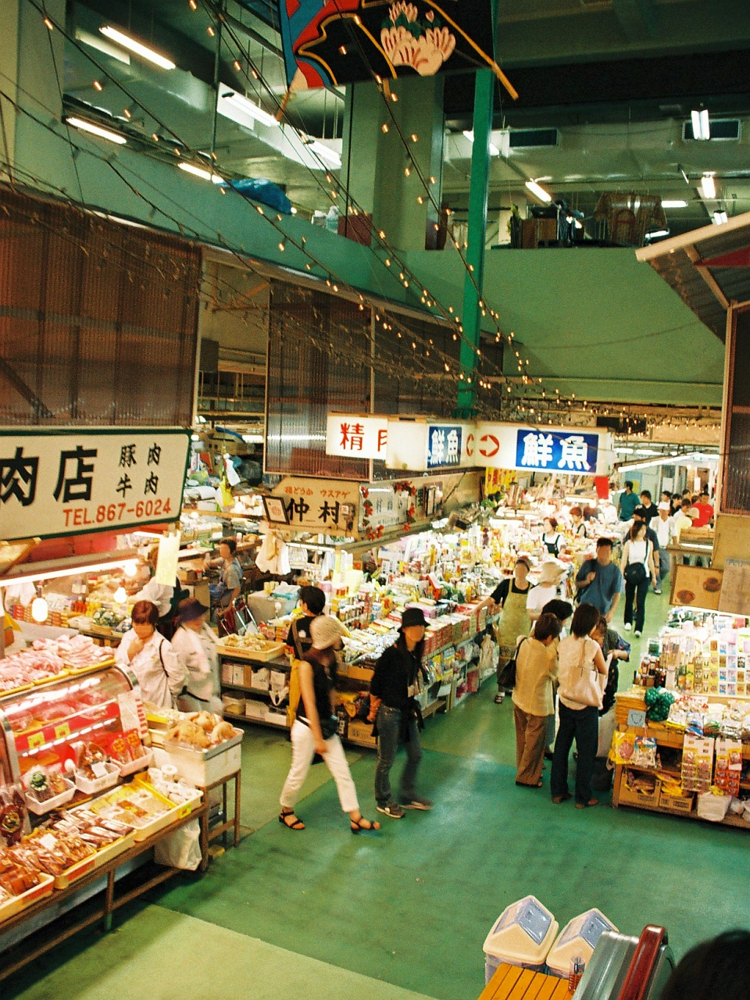
通りはお土産、市場は匂いと色。紅いもタルト、ちんすこう、シーサー小物はここで十分揃います。荷物は最小限で。
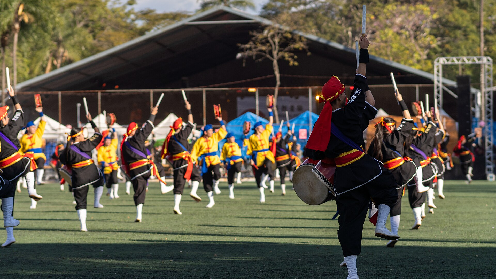
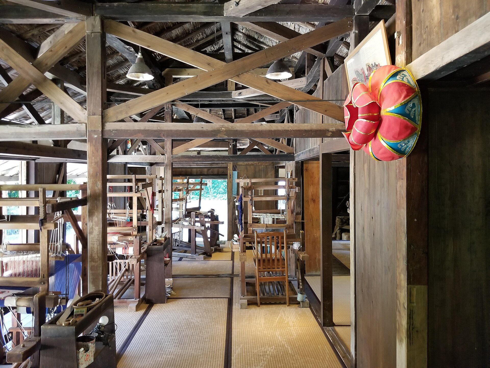
移築された琉球の家々を歩き、エイサーを見て、シーサーを塗る。文化の密度は一番高い。済井出から南下→また北部の美ら海、と走る日になる。
崖のうえから東シナ海が開ける、恩納の看板絶景。滞在は短くていいので、水族館の時間を死守したい日の本命です。
カートで畑を一周して、甘いものを買う定番ルート。地味に感じるなら、滞在は50分で切り上げて美ら海へ先に行った方が満足度は上がります。